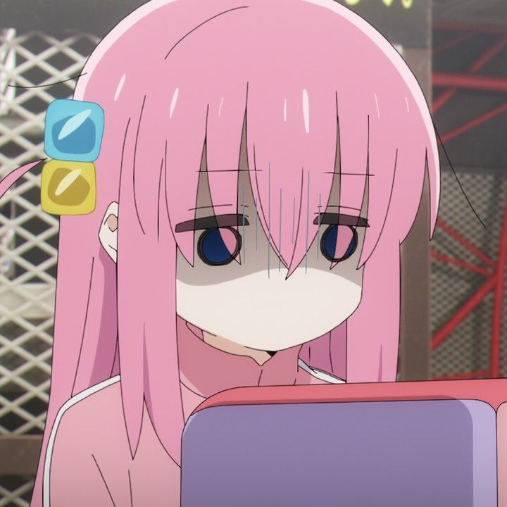

My uh, wiki I guess?
Hitori Gotoh (後藤 ひとり Gotō Hitori), an extremely timid and introverted first-year student in high school often referred by her bandmates as Bocchi-chan (ぼっちちゃん), is the titular main protagonist of the manga and anime series, Bocchi the Rock!. She is in the first year of Shuka High School and is in charge of the guitar and lyrics of the band, Kessoku Band. She aspires to perform in a band that could showcase even a reserved girl's talent, hence she began playing the guitar. Although her skill is the real deal, she struggles to exhibit it proficiently in a band or in front of an audience.
Hitori's appearance is characterized by her long pink hair, which is tied with a blue and yellow cube hair accessory on the right side of her head, her aqua-colored eyes, and her fair complexion. In her uniform, she usually wears a pink tracksuit with a long gray pleated skirt, black socks, and brown shoes as part of her style. Ironically, she surprisingly has a large bust (shown in the manga); this is most likely because she dresses in baggy clothing.
Hitori is an extremely introverted girl with high social anxiety, making it very difficult for her to talk to strangers. She often tries to avoid interactions, even performing her first live house show from inside a cardboard mango box.[8] Because of her introversion, she rarely goes outside and instead spends most of her time at home, playing the guitar alone in a dark closet. She seeks praise from others, likely as a reaction to her personality. She started playing the guitar to become a music star for the sole reason of being admired. She sometimes attempts to socialize, often in unusual ways, such as mimicking how others talk. However, these attempts often fail.